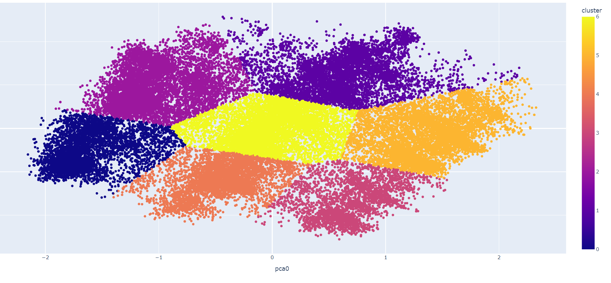

Genres: Python, Machine Learning, Data Engineering, Web APIs
This project is a game recommendation engine for the Steam platform, which
used machine learning and data pipelines to provide the user a top 10 list of recommended games.
Here are your recommended games:
Talvisota - Winter War
Fun with Ragdolls: The Game
Battlevoid: Harbinger
GemCraft - Chasing Shadows
Ashes of Creation Apocalypse
Steel Circus
Mass Effect™: Andromeda Deluxe Edition
Alien Rage - Unlimited
GUILTY GEAR XX ACCENT CORE PLUS R
Borderlands Game of the Year Enhanced
In order to do this, we used two open-source databases called SteamSpy API and the official Steam web API
in order to gather data about the user and the games that we would be working with. The approach that we decided
to take was a K-Means clustering approach based on the tags and genres of the games provided.

To do this, we used the Scikit Learn machine learning library along with pandas databases in order to engineer and
develop and process the data that we were going to use.
This project most importantly taught me the many considerations to take into account when training a machine learning model.
To learn more about the process, you can click the Full Report button below!